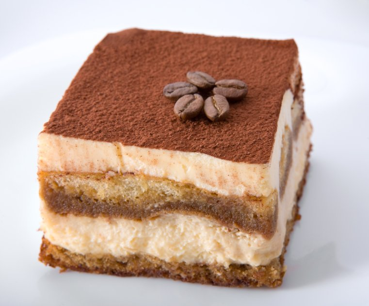

Tiramisu is an Italian dessert made of ladyfinger pastries (savoiardi) dipped in coffee, layered with a whipped mixture of egg yolks, sugar, and mascarpone, and flavoured with cocoa powder.
The recipe has been adapted into many varieties of cakes and other desserts.